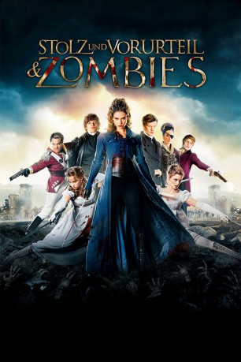
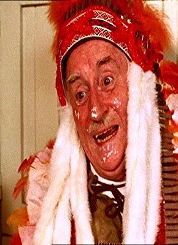

#12194 Stolz und Vorurteil & Zombies
Alternativ: Pride and Prejudice and Zombies (Englischer Titel)
 
 IMDB-Wertung: 5.8 / 10
IMDB-Wertung: 5.8 / 10  Tomatometer: 45
Tomatometer: 45  Metascore: 45
Metascore: 45 
Im London Anfang des 18. Jahrhunderts dreht sich in der gehobenen Gesellschaft für die Familie Bennet alles um eine Aufgabe. Die fünf Töchter müssen irgendwie unter die Haube gebracht werden. Elisabeth scheint aber ein schwieriger Fall zu sein, was das Heiraten angeht, denn die Kluft zwischen Liebe und Zweckehe ist schwer zu schließen. Der neue und überaus vermögende Nachbar Charles Bingley scheint ein geeigneter Kandidat. Doch er verliebt sich in Elisabeths Schwester Jane. Sein guter Freund Mr. Darcy dagegen, scheint sich durchaus für das eigensinnige Mädchen erwärmen zu können, obwohl eine Heirat weit unter seinem Stand wäre. Elisabeth, die bald genug von den Anbandlungen und damit verbundenen Intrigen hat, entschließt sich aber, dem Kampf gegen eine sich ausbreitende Zombieseuche anzutreten.
Jahr: 2016
Dauer: 107 Minuten
FSK: 16
Land: USA Studio: Screen GemsTonspuren: DTS - ,
Untertitel: Deutsch,
Auflösung: 1080p (1920x800) Größe: 8110 MB
Genre: Action, Horror, Komödie, Fantasy, Liebe
Regisseur: Burr Steers
Drehbuch: Burr Steers, Jane Austen, Seth Grahame-Smith
Soundtrack: Fernando Velázquez
Darsteller:
 Lily James als Elizabeth Bennet
Lily James als Elizabeth Bennet Sam Riley als Mr. Darcy
Sam Riley als Mr. Darcy Bella Heathcote als Jane Bennet
Bella Heathcote als Jane Bennet- Ellie Bamber als Lydia Bennet
- Millie Brady als Mary Bennet
 Suki Waterhouse als Kitty Bennet
Suki Waterhouse als Kitty Bennet Douglas Booth als Mr. Bingley
Douglas Booth als Mr. Bingley Sally Phillips als Mrs. Bennet
Sally Phillips als Mrs. Bennet Charles Dance als Mr. Bennet
Charles Dance als Mr. Bennet Jack Huston als George Wickham
Jack Huston als George Wickham Lena Headey als Lady Catherine de Bourgh
Lena Headey als Lady Catherine de Bourgh- Matt Smith als Parson Collins
- Emma Greenwell als Caroline Bingley
- Aisling Loftus als Charlotte
- Charlie Anson als Mr. Hurst
-  Robert Fyfe als Butler Edwin
- Kate Doherty als Mrs. Kenicot
- Pippa Haywood als Mrs. Long
 Morfydd Clark als Georgiana
Morfydd Clark als Georgiana- Dolly Wells als Mrs. Featherstone
 Hermione Corfield als Cassandra
Hermione Corfield als Cassandra- Pooky Quesnel als Mrs. Phillips
- Jonathan Oliver als Priest
- Angus Kennedy als Mr. Kingston
- Nathan Whitfield als Sentry 1
- Rob Callender als Subordinate Officer
 Euan Macnaughton als Physician
Euan Macnaughton als Physician- Rebecca Scott als Penny McGregor
 Gintare Beinoraviciute als Meryton Ball Guest (uncredited)
Gintare Beinoraviciute als Meryton Ball Guest (uncredited) Ancuta Breaban als Spact C Zombie (uncredited)
Ancuta Breaban als Spact C Zombie (uncredited) Caroline Garnell als Parson Collins Housekeeper (uncredited)
Caroline Garnell als Parson Collins Housekeeper (uncredited)- Elisa Hayrapetyan als Zombie (uncredited)
- Frans Isotalo als The man on guard (uncredited)
- Jess Radomska als Annabelle Netherfield (uncredited)
- Eva Bell als Louisa
- Tom Lorcan als Lt. Denny
- Dan Cohen als Young Soldier
- Nicholas Murchie als Franklin
- Bessie Cursons als Lady Anne de Bourgh
- Janet Henfrey als Dowager
- Richard Braine als Black Suited Man
- Robert Morgan als Mr. Phillips
- Charles Ames als Eldest Zombie Boy
- Michael Cole als Sentry 2
 Dominic Borrelli als Mortician
Dominic Borrelli als Mortician- Poppy Boyes als Zombie Child (uncredited)
- Helen Evans als Zombie (uncredited)
- David Few-Cooper als Soldier (uncredited)
- Elliot Fiddy als Armed Guard (uncredited)
- Andy Hayes als Squire (uncredited)
Datei: X:\2016(N-Z)\Stolz und Vorurteil & Zombies (2016, FSK16, 1920x800).mkv seit 30.12.2019
Festplatte: Gemischt-01+Anime
 Es gibt insgesamt 182 Filme in der Gruppe '2016(N-Z)'
Es gibt insgesamt 182 Filme in der Gruppe '2016(N-Z)'